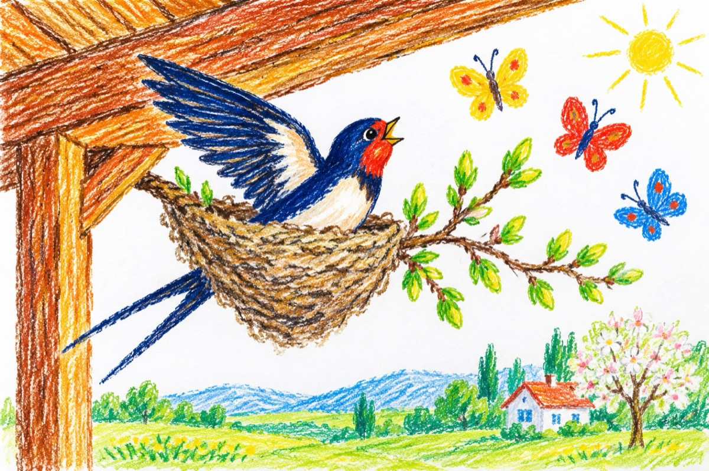

E primăvară
De-acum primăvara e prin pomi
Cotrobăind prin ierburi, după gâze, după flori
Pictați pe cer stau fluturii-n coroană
Pe grindă rândunica-și pune cuibu-n ramă...
De-acum primăvara ca un copil pășește
Purtată-n voal de simfonii celeste,
De iureșul de muguri verzi în teci
Și mirosul bogat de lilieci...
De-acum primăvara-i în bătrânii
Ce nu mai sunt în stare de a mai fi stăpâni
Doar inima le joacă fețe, fețe
Redându-le trăiri din tinerețe!
De-acum primăvara-i peste tot
Și în pădurea verde, și-n lanul dat în copt!
Vasile Groza
Apare și în: Poezii cu animale.